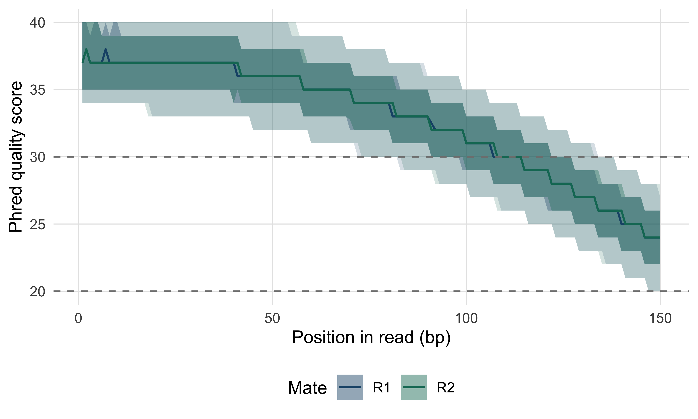
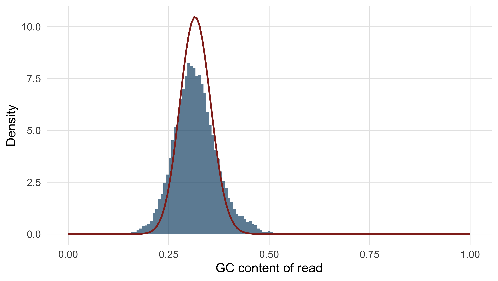
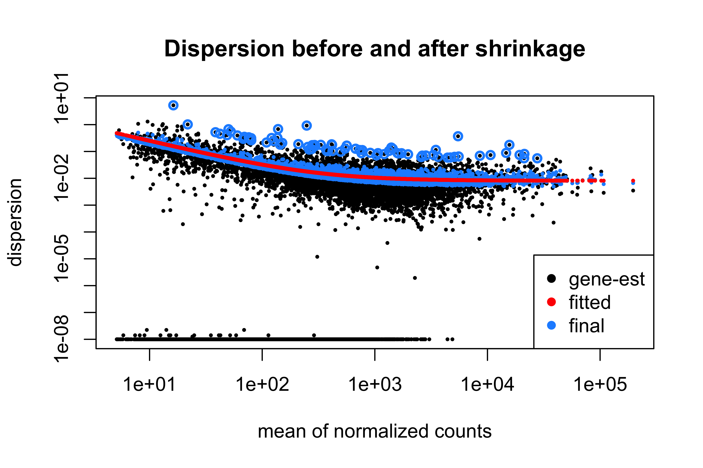
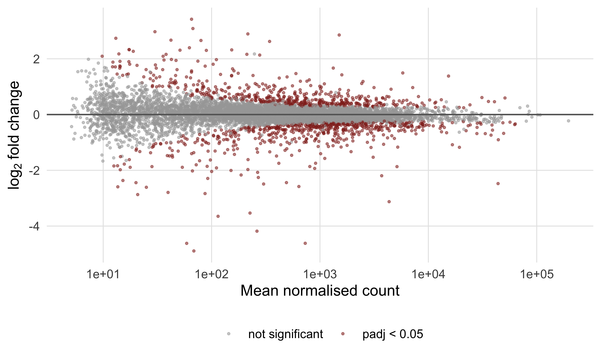
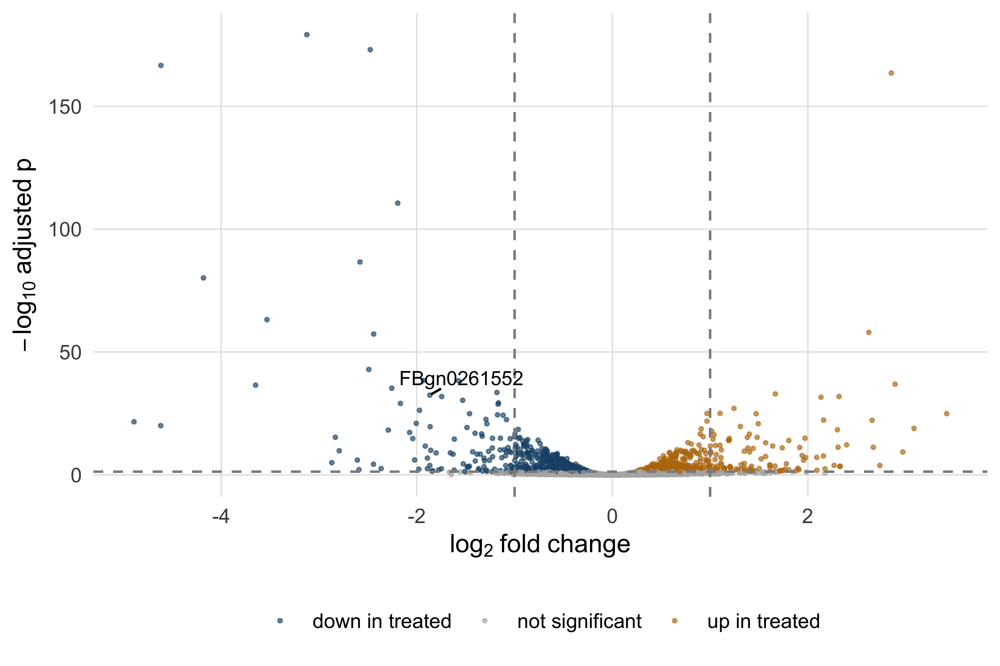
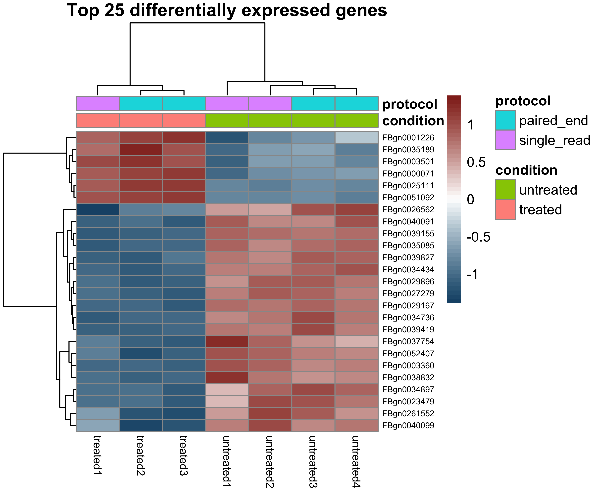

9 Next-generation sequencing data from reads to results
After working through this chapter you will be able to
- relate the error profile of Illumina, Nanopore and PacBio HiFi data to the analysis decisions each one forces on you
- explain which artefacts in a dataset were created by library preparation rather than by biology
- decode a FASTQ record by hand, including its Phred scores, and compute the expected number of errors in a read
- reproduce the diagnostic plots of a quality report from the raw file and decide, with reasons, whether to trim
- interpret the eleven mandatory SAM fields, decode a FLAG, read a CIGAR string and explain what a MAPQ of zero means
- dissect a VCF file, distinguish INFO from FORMAT fields and design a filtering strategy that is defensible
- run a complete differential expression analysis with DESeq2 and state precisely what its adjusted p-values do and do not promise
A sequencing run produces no biology. It produces a few gigabytes of text in which every line is a machine’s opinion about which base sat at which position in which fragment of DNA, with a number saying how sure it was. Everything such an experiment eventually claims — this sample carries a pathogenic variant, this gene is induced three-fold — is an inference built on those opinions through a chain of transformations, every one of which can be done well or badly.
Three bundled datasets carry the work. The first is a pair of simulated read files, data/reads/mgen_sim_R1.fastq.gz and data/reads/mgen_sim_R2.fastq.gz: 20,000 paired 150 bp reads drawn from the Mycoplasmoides genitalium G37 genome (Fraser et al. 1995) that the previous chapter annotated, with position-dependent quality decay and matching sequencing errors. Because they were simulated, every read name records the coordinate the fragment came from — a luxury no real dataset offers, because it lets you check an alignment against the truth rather than against another program’s opinion. The second is data/variants/tp53_clinvar.vcf, a slice of ClinVar (Landrum et al. 2017) covering 3,888 variants in TP53. The third is data/expression/pasilla_gene_counts.tsv, an RNA interference knockdown of the Drosophila splicing factor pasilla (Brooks et al. 2010), on which the final section runs a differential expression analysis from raw counts to an interpreted gene list.
By the end you will have parsed a FASTQ file without a specialised package, rebuilt the central panels of a quality report, aligned reads and checked the result against ground truth, decoded SAM flags and CIGAR strings by hand, filtered variants, and taken a count matrix through normalisation, dispersion estimation, testing and false discovery control to a defensible gene list. The habit being built is smaller than any of those steps: look at the data at every stage, and know which numbers were measured and which were assumed.
9.1 Setting up
9.2 Sequencing chemistries and the errors they make
An analyst does not need to be able to build a sequencer, but does need to know what each chemistry does when it is uncertain, because that determines which artefacts are plausible and which are not.
Illumina sequencing by synthesis (SBS) amplifies each library fragment in place on a flow cell into a cluster of perhaps a thousand copies, then sequences one base per cycle with fluorescently labelled, reversibly terminated nucleotides, imaging the cell between cycles. Two consequences follow. The signal is averaged over a whole cluster, so the method depends on every copy staying in step; molecules that fail to incorporate fall behind (phasing) and molecules that incorporate twice run ahead (pre-phasing), the fraction out of step grows every cycle, and base-call confidence decays along the read. Every Illumina per-position quality plot slopes downwards for this reason, and it is not a fault. And because the error mechanism is a mis-read signal rather than a mis-counted base, the errors are overwhelmingly substitutions — about one base in a thousand early in a read, rising towards one in a hundred at the end — with indels rare. Reads are 50–300 bp, usually taken from both ends of a fragment.
Oxford Nanopore draws a single strand through a protein pore and records the ionic current, which a neural network converts to bases. Nothing is amplified and there is no cycle, so there is no decay along the read and no length limit; tens of kilobases are routine. The errors are insertions and deletions, concentrated in homopolymer runs where six and seven identical bases give nearly the same current. The devices are portable, which is why they became central to outbreak response (Quick et al. 2017).
PacBio HiFi reads a circularised fragment round and round with one polymerase and reports the consensus of the passes. The per-pass error rate is high but random, so averaging over ten or more passes drives the consensus below one error in a thousand while retaining 15–25 kb reads.
The chemistry decides much of what follows. Short, accurate, substitution-dominated reads suit variant calling, RNA-seq counting and population surveys; long, noisy reads resolve repeats and full-length transcripts and need a caller that models indel noise; long, accurate reads are the current basis for reference-quality assembly. The question is never which chemistry is best but which error mode you can tolerate. A homopolymer-length difference, for instance, is weak evidence from Nanopore data and strong evidence from Illumina or HiFi data.
9.3 What library preparation leaves behind
Between the sample and the flow cell sits the library: DNA fragmented to a chosen size, with synthetic adapters ligated to both ends, often amplified by PCR, and tagged with an index so that many samples can share a run. Each step leaves a signature, and recognising a signature as preparation rather than biology saves wasted interpretation.
Adapters are a handle, not genome. If a fragment (the insert) is longer than the read, the read stops before reaching the far adapter; if it is shorter, the polymerase reads off the end of the insert into the adapter beyond — read-through — and the tail of the read is synthetic sequence that will not align. Adapter contamination therefore rises as insert size falls.
Duplicates come from PCR, which copies some fragments more than others, every copy carrying the same start and end coordinates. They inflate apparent depth without adding information, because a variant seen in ten reads that are copies of one molecule has been observed once; Section 9.7 marks them. Insert size reads out the size selection step, and a long tail or a second mode in a bacterial isolate usually means a structural difference or a contaminant.
Strandedness matters only for RNA: an unstranded library loses which strand a transcript came from, so reads from overlapping genes on opposite strands cannot be assigned. Getting the setting wrong when counting is a quiet failure — most genes look plausible and the ones with antisense neighbours are wrong.
Marking duplicates is correct for whole-genome and exome resequencing, where fragments are randomly sheared and identical start points are improbable. It is wrong for amplicon sequencing, where every read starts at the same primer by design, and usually wrong for RNA-seq, where a highly expressed transcript genuinely produces many fragments with identical ends. Unique molecular identifiers — random barcodes added before amplification — are the only way to tell a PCR copy from a coincidence with certainty.
9.4 The FASTQ format and the Phred scale
FASTQ is the universal container for reads. Each record is four lines: an identifier beginning with @, the base sequence, a line beginning with +, and one quality character per base. There is no header, no version field and no index, which is why everything reads FASTQ and why nothing validates it.
read_fastq <- function(path) {
connection <- gzfile(path, "rt")
lines <- readLines(connection)
close(connection)
if (length(lines) %% 4 != 0) {
stop("truncated FASTQ: ", length(lines), " lines is not a multiple of four")
}
list(name = sub("^@", "", lines[seq(1, length(lines), by = 4)]),
seq = lines[seq(2, length(lines), by = 4)],
qual = lines[seq(4, length(lines), by = 4)])
}
reads_r1 <- read_fastq(book_data("reads", "mgen_sim_R1.fastq.gz"))
reads_r2 <- read_fastq(book_data("reads", "mgen_sim_R2.fastq.gz"))
cat(sprintf("%d read pairs, all %d bp\n",
length(reads_r1$seq), unique(nchar(reads_r1$seq))))
#> 20000 read pairs, all 150 bp
cat(reads_r1$name[1], "\n")
#> SIM:1:FC1:1:1:0:386803/1
cat(substr(reads_r1$seq[1], 1, 60), "...\n")
#> AGTCTTGTTAGAAGCACCATTAAATCCTGCTATTGTTGAAACTCCTTTAAATATTGTTCA ...
cat(substr(reads_r1$qual[1], 1, 60), "...\n")
#> IIGBIIGICCIFIIHDFFFIIEFHFEBIGGEHEGCDEHHEFDE?FBBDDDGIFCEICIC? ...A real Illumina identifier encodes the instrument, run, flow cell, lane, tile and cluster coordinates, and the /1 suffix marks the first mate. These simulated names follow the same shape with one addition: the final field before the mate suffix is the 0-based coordinate the fragment came from. That is ground truth, and Section 9.6 uses it.
The quality line is the part that carries information rather than sequence. Each character encodes a Phred quality score \(Q\), defined from the estimated probability \(P\) that the base call is wrong:
\[Q = -10 \log_{10} P\]
so \(Q = 10\) means a 1 in 10 chance of error, \(Q = 20\) means 1 in 100, \(Q = 30\) means 1 in 1,000 and \(Q = 40\) means 1 in 10,000. The score is stored as a single ASCII character whose code point is \(Q + 33\), which puts \(Q = 0\) at ! and \(Q = 40\) at I.
phred_scores <- function(quality_strings) {
codes <- utf8ToInt(paste(quality_strings, collapse = "")) - 33L
matrix(codes, nrow = length(quality_strings), byrow = TRUE)
}
quality_r1 <- phred_scores(reads_r1$qual)
quality_r2 <- phred_scores(reads_r2$qual)
first <- quality_r1[1, 1:12]
cat("first 12 quality characters:", substr(reads_r1$qual[1], 1, 12), "\n")
#> first 12 quality characters: IIGBIIGICCIF
cat("as Phred scores :", first, "\n")
#> as Phred scores : 40 40 38 33 40 40 38 40 34 34 40 37
cat("as error probabilities :", signif(10^(-first / 10), 2), "\n")
#> as error probabilities : 1e-04 1e-04 0.00016 5e-04 1e-04 1e-04 0.00016 1e-04 4e-04 4e-04 1e-04 2e-04Reading a quality string as a probability is the most useful habit in read-level quality control, because it makes the scale’s non-linearity obvious: every ten points multiply the error probability by ten. Summing those probabilities across a read gives its expected number of errors, a far better per-read summary than mean quality, because averaging logarithms of probabilities is not an operation with a useful meaning.
expected_errors <- rowSums(10^(-quality_r1 / 10))
cat(sprintf("expected errors per read: median %.2f, 95th percentile %.2f\n",
median(expected_errors), quantile(expected_errors, 0.95)))
#> expected errors per read: median 0.16, 95th percentile 0.19
cat(sprintf("reads with more than one expected error: %.2f%%\n",
100 * mean(expected_errors > 1)))
#> reads with more than one expected error: 0.00%
cat(sprintf("bases at Q30 or better : %.1f%%\n",
100 * mean(quality_r1 >= 30)))
#> bases at Q30 or better : 74.2%One historical trap survives in old files: Illumina pipelines before version 1.8 used an offset of 64 rather than 33, so the same character meant a score 31 points higher, and such a file fed to a modern tool yields quality scores that look impossibly good or impossibly bad. A quality string containing characters below : is offset 33; one with no character below @ should be checked before it is analysed.
9.5 A quality report you can build yourself
FastQC (Andrews 2010) is the standard first look at a read file and MultiQC (Ewels et al. 2016) aggregates it across hundreds of samples. Neither is worth trusting if you cannot say what its plots are computed from, so this section rebuilds the two most important panels. The per-position quality plot is a distribution, not a line: at every cycle there is a population of scores across reads, and its shape matters more than its mean. Figure 9.1 shows the quartiles and the 10th and 90th percentiles for both mates.
position_summary <- function(quality_matrix, mate) {
quantiles <- apply(quality_matrix, 2, quantile, probs = c(0.1, 0.25, 0.5, 0.75, 0.9))
data.frame(position = seq_len(ncol(quality_matrix)), mate = mate,
lower = quantiles[1, ], q1 = quantiles[2, ], median = quantiles[3, ],
q3 = quantiles[4, ], upper = quantiles[5, ])
}
quality_profile <- rbind(position_summary(quality_r1, "R1"),
position_summary(quality_r2, "R2"))
ggplot(quality_profile, aes(position, median, colour = mate, fill = mate)) +
geom_ribbon(aes(ymin = lower, ymax = upper), alpha = 0.18, colour = NA) +
geom_ribbon(aes(ymin = q1, ymax = q3), alpha = 0.35, colour = NA) +
geom_line(linewidth = 0.6) +
geom_hline(yintercept = c(20, 30), linetype = "dashed", colour = "grey50") +
scale_colour_manual(values = book_palette[1:2]) +
scale_fill_manual(values = book_palette[1:2]) +
labs(x = "Position in read (bp)", y = "Phred quality score",
colour = "Mate", fill = "Mate")
Read it as a decision aid. The median starts near Q37 and is still above Q20 at the last cycle, so no part of the read is unusable; the lower edge of the pale band decides trimming, because cycles where a tenth of reads have fallen below about Q20 contribute more mismatches than information. The two mates behave almost identically here. In real Illumina data R2 is routinely worse than R1 — the second read is made after the cluster has sat through the first read and an index read — and that is normal rather than a reason to discard a run.
The second panel worth rebuilding is per-read GC content, the cheapest contamination detector available.
gc_fraction <- function(sequences) {
(lengths(regmatches(sequences, gregexpr("[GCgc]", sequences)))) / nchar(sequences)
}
gc_r1 <- gc_fraction(reads_r1$seq)
genome_gc <- 0.3169 # measured in the genome annotation chapter
expected <- data.frame(gc = 0:150 / 150,
density = dbinom(0:150, 150, genome_gc) * 150)
ggplot(data.frame(gc = gc_r1), aes(gc)) +
geom_histogram(aes(y = after_stat(density)), binwidth = 1 / 150,
fill = book_palette[1], alpha = 0.7) +
geom_line(data = expected, aes(gc, density), colour = book_palette[4],
linewidth = 0.7) +
labs(x = "GC content of read", y = "Density")
A single smooth peak on the expected curve means the reads come from one genome whose composition you guessed correctly. A second peak is the signature that matters: a shoulder at high GC is often adapter dimer or a contaminating organism, and a narrow spike at one value is usually an over-represented sequence such as rRNA. The shape, not the mean, carries the diagnosis.
Three more checks complete a minimal report.
duplicate_fraction <- mean(duplicated(reads_r1$seq))
first_base <- table(substr(reads_r1$seq, 1, 1))
n_bases <- sum(lengths(regmatches(reads_r1$seq, gregexpr("N", reads_r1$seq))))
cat(sprintf("exactly duplicated R1 sequences: %.2f%%\n", 100 * duplicate_fraction))
#> exactly duplicated R1 sequences: 1.29%
cat(sprintf("ambiguous (N) base calls : %d\n", n_bases))
#> ambiguous (N) base calls : 0
cat("first-base composition (%):\n")
#> first-base composition (%):
print(round(100 * first_base / length(reads_r1$seq), 1))
#>
#> A C G T
#> 34.3 15.9 16.1 33.7The duplicate level of 1.29% is low and expected — no PCR was simulated — where 40% in a whole-genome library would point at over-amplification of a low-input sample. The first-base composition is close to the genome’s own 34% A, 16% C, 16% G, 34% T, as a randomly fragmented library should be; a strongly skewed composition over the first 10–12 bases is normal in randomly primed RNA-seq libraries, and is one of the FastQC modules that most often raises a red flag on good data.
Trimming, and when it does more harm than good
Trimming removes adapter sequence and low-quality read ends. Adapter removal is not optional: residual adapter does not align, and in RNA-seq it causes spurious junctions. Trimmomatic (Bolger, Lohse, and Usadel 2014) and fastp (Chen et al. 2018) do both jobs in one pass. Quality trimming is the contentious half; the usual rule slides a small window from the 3’ end and cuts where its mean quality falls below a threshold.
trim_point <- function(quality_row, window = 4, threshold = 20) {
means <- stats::filter(quality_row, rep(1 / window, window), sides = 1)
bad <- which(means < threshold)
if (!length(bad)) length(quality_row) else min(bad) - window
}
for (threshold in c(15, 20, 25)) {
lengths_kept <- apply(quality_r1, 1, trim_point, threshold = threshold)
cat(sprintf("Q%d: median length %3d bp, %5.1f%% of bases retained, %4.1f%% of reads under 50 bp\n",
threshold, median(lengths_kept),
100 * sum(lengths_kept) / length(quality_r1),
100 * mean(lengths_kept < 50)))
}
#> Q15: median length 150 bp, 100.0% of bases retained, 0.0% of reads under 50 bp
#> Q20: median length 150 bp, 100.0% of bases retained, 0.0% of reads under 50 bp
#> Q25: median length 134 bp, 89.1% of bases retained, 0.0% of reads under 50 bpAt Q15 and Q20 the rule removes nothing at all: the four-base window mean never falls below the threshold, even in the final cycles, because the decay in this dataset is gentle. At Q25 it removes 11% of the bases and shortens the median read to 134 bp. What do those bases buy you? Very little in an alignment-based analysis: a modern aligner soft-clips read ends that do not match and a variant caller already uses base quality in its likelihood. Aggressive trimming, meanwhile, shortens reads and so reduces mapping uniqueness, and biases what remains, because the bases removed are not a random sample. In RNA-seq it shifts reads between transcripts whose distinguishing positions sit near read ends, changing quantification.
Remove adapters in every dataset. Quality-trim only with a reason: a de novo assembly, whose k-mer graph is genuinely damaged by erroneous bases, or a plot showing a sharp collapse rather than the gentle decay seen here. Record the threshold with the results, because a count computed after trimming is not comparable with one computed before it.
9.6 Aligning reads to a reference
Alignment answers one question per read: where in the reference did this fragment most plausibly come from? Dynamic programming against the whole genome, as in the pairwise alignment chapter, would be exact and unusably slow — roughly \(4.5 \times 10^{11}\) cell evaluations for one 150 bp read against a 3 Gb genome, out of hundreds of millions of reads.
What made short-read alignment practical is an index that answers “where does this exact substring occur?” in time proportional to the substring’s length rather than the genome’s size. The FM-index, used by BWA (Li and Durbin 2009) and Bowtie 2 (Langmead and Salzberg 2012), is built from the Burrows–Wheeler transform: sort every rotation of the sequence alphabetically and keep the last character of each. The result is a compressible permutation that can be inverted and, more usefully, searched backwards — one character at a time from the right, a rank query at each step narrowing the range of rotations beginning with the suffix matched so far, until the width of the surviving range gives the number of occurrences. The index for a human genome fits in a few gigabytes, against the hundreds a naive suffix array would need.
Exact matching alone is not enough, because reads carry errors and samples carry variants. Aligners therefore seed and extend: find near-exact seeds with the index, cluster seeds consistent with one placement, and finish with banded dynamic programming in those small windows only, so that full Smith–Waterman effort is spent on a few hundred bases per read instead of three billion.
Choosing an aligner means matching the tool to the chemistry. BWA-MEM and Bowtie 2 are the standards for short DNA reads and minimap2 (Li 2018) for long ones. RNA-seq needs a splice-aware aligner, because a read crossing an exon junction has no contiguous genomic match; STAR (Dobin et al. 2012) and its peers solve that by allowing large gaps at splice-site motifs.
The run below is real. BWA and samtools (Danecek et al. 2021) are both installed, but an alignment produces files far larger than the book ships, so the commands are shown rather than executed and the output beneath each was captured from an actual run in a scratch directory holding a copy of the bundled reference.
bwa index mgen.fasta
bwa mem -t 4 -R '@RG\tID:sim1\tSM:mgen_sim\tPL:ILLUMINA\tLB:lib1' mgen.fasta \
../data/reads/mgen_sim_R1.fastq.gz ../data/reads/mgen_sim_R2.fastq.gz \
| samtools sort -o mgen_sim.bam -
samtools index mgen_sim.bamThe -R option writes a read group line into the header, recording sample, platform and library. It costs nothing now, is required by most callers, and adding it later means rewriting the file. BWA reports what it infers about the library as it goes:
[M::mem_pestat] # candidate unique pairs for (FF, FR, RF, RR): (0, 19724, 0, 0)
[M::mem_pestat] analyzing insert size distribution for orientation FR...
[M::mem_pestat] (25, 50, 75) percentile: (349, 349, 349)
[M::mem_pestat] mean and std.dev: (349.00, 0.00)
[M::mem_process_seqs] Processed 40000 reads in 0.823 CPU sec, 0.207 real secThat is the aligner estimating insert size from the data, and it is worth reading on every run. The orientation is FR, as a paired-end Illumina library should be, and the insert size is exactly 349 bp with zero standard deviation — the tell-tale sign of simulated data, where a real library would show a roughly normal spread 50–100 bp wide.
The first summary to look at is samtools flagstat, which counts flag bits over the whole file.
samtools flagstat mgen_sim.bam40000 + 0 in total (QC-passed reads + QC-failed reads)
40000 + 0 primary
0 + 0 secondary
0 + 0 supplementary
0 + 0 duplicates
40000 + 0 mapped (100.00% : N/A)
40000 + 0 paired in sequencing
20000 + 0 read1
20000 + 0 read2
39968 + 0 properly paired (99.92% : N/A)
40000 + 0 with itself and mate mapped
0 + 0 singletons (0.00% : N/A)
0 + 0 with mate mapped to a different chrThree numbers carry nearly all the information. The mapped percentage says whether the reads came from the organism you think: 100% here because they were simulated from this reference, 95–99% for a good bacterial isolate, below about 70% a reason to classify the unmapped reads taxonomically. The properly paired percentage adds the constraint that both mates mapped in the expected orientation at a plausible distance; the 32 reads mapped but not properly paired are the interesting ones. Singletons above a few per cent indicate a chimeric or poor library.
Because the reads are simulated, the alignment can be checked against truth rather than a second opinion. The name encodes the fragment’s 0-based start, so mate 1 should align at that coordinate plus one and mate 2, the reverse complement of the last 150 bp of a 350 bp fragment, 200 bp further along.
true_start <- as.integer(sub(".*:", "", sub("/[12]$", "", reads_r1$name)))
cat("first three fragments start at 0-based", head(true_start, 3), "\n")
#> first three fragments start at 0-based 386803 522982 284660
cat("so mate 1 should align at POS", head(true_start + 1L, 3), "\n")
#> so mate 1 should align at POS 386804 522983 284661
cat("and mate 2 at POS ", head(true_start + 201L, 3), "\n")
#> and mate 2 at POS 387004 523183 284861Comparing those expectations with the POS column is an awk one-liner over samtools view; the real result on the alignment above was:
alignments checked : 40000
placed at true position: 39975 (99.938%)
placed elsewhere : 25
of which MAPQ 0 : 18
of which MAPQ > 0 : 7Twenty-five reads out of 40,000 are in the wrong place even though every read came from this genome and there is no biological variation. That is the irreducible background of short-read alignment, and it is concentrated in repeats. Most of the misplaced reads carry a mapping quality of zero, the aligner saying honestly that it could not choose.
9.7 The anatomy of SAM and BAM
SAM is the text format for alignments; BAM is the same content compressed in blocks and indexed so a region can be retrieved without reading the whole file; CRAM compresses further by storing only differences from the reference. A SAM file begins with header lines starting @, and the real header of the alignment above is six lines:
@HD VN:1.5 SO:coordinate
@SQ SN:NC_000908.2 LN:580076
@RG ID:sim1 SM:mgen_sim PL:ILLUMINA LB:lib1
@PG ID:bwa PN:bwa VN:0.7.19-r1273 CL:bwa mem -t 4 ...
@PG ID:samtools PN:samtools PP:bwa VN:1.24 CL:samtools sort -o mgen_sim.bam -@HD records the sort order; @SQ names every reference sequence with its length, the contract that makes coordinates meaningful and the reason two BAM files with different @SQ lines cannot be merged; @RG is the read group and each @PG one program that touched the file, a provenance chain worth reading whenever a file’s history is in doubt. Every alignment line then has eleven mandatory tab-separated fields followed by optional tagged ones. The record below is the first alignment in the real BAM, verbatim except that the sequence, quality string and trailing tags are abbreviated for the page.
sam_line <- paste("SIM:1:FC1:1:6:978:10", "99", "NC_000908.2", "11", "60", "150M",
"=", "211", "350", "TTTAGTTAATACT...", "FFEGHIIIGIID...",
"NM:i:0", "MD:Z:150", "MC:Z:150M", "MQ:i:60", "AS:i:150",
sep = "\t")
fields <- strsplit(sam_line, "\t")[[1]]
names(fields)[1:11] <- c("QNAME", "FLAG", "RNAME", "POS", "MAPQ", "CIGAR",
"RNEXT", "PNEXT", "TLEN", "SEQ", "QUAL")
for (i in 1:11) cat(sprintf("%-6s %s\n", names(fields)[i], fields[i]))
#> QNAME SIM:1:FC1:1:6:978:10
#> FLAG 99
#> RNAME NC_000908.2
#> POS 11
#> MAPQ 60
#> CIGAR 150M
#> RNEXT =
#> PNEXT 211
#> TLEN 350
#> SEQ TTTAGTTAATACT...
#> QUAL FFEGHIIIGIID...QNAME is shared by both mates; RNAME and POS give the 1-based leftmost coordinate and RNEXT/PNEXT do the same for the mate, = meaning the same reference sequence. TLEN is the observed template length, signed so the leftmost mate is positive — here 350 bp. SEQ and QUAL are reverse-complemented when the read aligned to the minus strand, a detail that catches everyone once. The FLAG is a bit field in which each bit answers one yes/no question; decoding it by hand once makes every later confusion evaporate.
flag_meanings <- c(
"1" = "read is paired",
"2" = "read mapped in proper pair",
"4" = "read unmapped",
"8" = "mate unmapped",
"16" = "read reverse strand",
"32" = "mate reverse strand",
"64" = "first in pair",
"128" = "second in pair",
"256" = "secondary alignment",
"512" = "fails platform quality checks",
"1024" = "PCR or optical duplicate",
"2048" = "supplementary alignment")
decode_flag <- function(flag) {
bits <- as.integer(names(flag_meanings))
flag_meanings[bitwAnd(flag, bits) > 0]
}
for (flag in c(99L, 147L, 97L)) {
cat(sprintf("FLAG %3d = %s\n", flag, paste(decode_flag(flag), collapse = "; ")))
}
#> FLAG 99 = read is paired; read mapped in proper pair; mate reverse strand; first in pair
#> FLAG 147 = read is paired; read mapped in proper pair; read reverse strand; second in pair
#> FLAG 97 = read is paired; mate reverse strand; first in pairFLAG 99 is the forward-strand mate of a well-behaved pair and the commonest flag in any paired-end file; its partner is 147. FLAG 97 is 99 with the proper-pair bit missing, and in this dataset those are exactly the 32 reads flagstat called mapped but not properly paired. Only four flag values occur in the whole file — 97, 99, 145 and 147 — because the simulation produced no unmapped, secondary or supplementary alignments.
MAPQ is the field most often misread. It is not the quality of the match but \(-10 \log_{10}\) of the probability that the read was placed in the wrong location, on the same Phred scale as a base quality. A MAPQ of 0 means the read aligns equally well in at least two places and the aligner reported one arbitrarily; such reads are not bad reads, they are reads about which the reference cannot be interrogated. Here 38 of the 40,000 reads have MAPQ 0, clustered around 223,900 and 273,200 in copies of the MgPa adhesin repeat family. Ground truth makes the consequence explicit: a read whose name says it came from 273,193 was placed at 223,924, in the other copy of the repeat, with a nonsensical template length of 49,122 bp.
Most variant-calling pipelines discard alignments below MAPQ 20, and they are right to: a variant supported only by ambiguously placed reads is usually an artefact of the repeat. But the filter is not free. Every read in a repeat family disappears, and a caller that sees no reads reports no variant rather than reporting uncertainty. Genes in segmental duplications and pseudogene pairs — SMN1/SMN2, PMS2, CYP21A2 — are routinely invisible to short-read pipelines for this reason. Know which regions of your reference are unmappable before reporting an absence of variants in them.
The CIGAR string says how the read lines up, as a run-length encoded list of operations: M for an aligned column (match or mismatch), I and D for insertion into and deletion from the reference, S for soft-clipping (bases in SEQ but not aligned), H for hard-clipping (bases absent from SEQ) and N for a skipped reference region, which is what a spliced aligner emits across an intron. Thirteen of the 40,000 real alignments carry a CIGAR other than 150M; the commonest is dissected below.
parse_cigar <- function(cigar) {
parts <- regmatches(cigar, gregexpr("[0-9]+[MIDNSHP=X]", cigar))[[1]]
data.frame(length = as.integer(sub("[A-Z=]$", "", parts)),
operation = sub("^[0-9]+", "", parts))
}
consumes_reference <- c("M", "D", "N", "=", "X")
consumes_query <- c("M", "I", "S", "=", "X")
cigar <- "3S147M"
operations <- parse_cigar(cigar)
print(operations)
#> length operation
#> 1 3 S
#> 2 147 M
cat(sprintf("read bases accounted for : %d\n",
sum(operations$length[operations$operation %in% consumes_query])))
#> read bases accounted for : 150
cat(sprintf("reference bases spanned : %d\n",
sum(operations$length[operations$operation %in% consumes_reference])))
#> reference bases spanned : 147
cat(sprintf("alignment ends at reference: %d\n",
35397 + sum(operations$length[operations$operation %in% consumes_reference]) - 1))
#> alignment ends at reference: 35543The read is 150 bp and POS is 35,397, but only 147 bases align: the first three were soft-clipped because they did not match, almost certainly simulated errors. Two rules follow. Operations consuming the query must sum to the read length or the record is malformed; operations consuming the reference give the alignment’s span, which is how an end coordinate is computed — POS + length(SEQ) is wrong whenever the CIGAR contains I, S, N or D.
Marking duplicates
Duplicate marking compares the outer coordinates of each pair and flags all but one copy of each set that agrees. The samtools route needs a name-sorted pass first, to fill in mate coordinates before they are compared.
samtools sort -n -o namesort.bam mgen_sim.bam
samtools fixmate -m namesort.bam fixmate.bam
samtools sort -o positionsort.bam fixmate.bam
samtools markdup -s positionsort.bam mgen_sim.markdup.bamThe -s flag asks for statistics, and the real run reported:
READ: 40000
WRITTEN: 40000
EXCLUDED: 0
EXAMINED: 40000
PAIRED: 40000
DUPLICATE PAIR: 708
DUPLICATE SINGLE: 0
DUPLICATE PAIR OPTICAL: 0
DUPLICATE TOTAL: 708
ESTIMATED_LIBRARY_SIZE: 558285Note what marking does: 40,000 reads in, 40,000 out, duplicates flagged by bit 1024 rather than deleted. Every one of those 708 flagged reads — 354 pairs — is a coincidence rather than a PCR copy, because the simulator performed no amplification, and the birthday problem predicts how many to expect.
fragments <- 20000
start_positions <- 580076 - 350
distinct_expected <- start_positions * (1 - (1 - 1 / start_positions)^fragments)
cat(sprintf("fragments simulated : %d\n", fragments))
#> fragments simulated : 20000
cat(sprintf("distinct start points expected: %.0f\n", distinct_expected))
#> distinct start points expected: 19659
cat(sprintf("coincidental duplicate pairs : %.0f\n", fragments - distinct_expected))
#> coincidental duplicate pairs : 341About 340 predicted against the 354 samtools marked. On a 580 kb genome collisions are common; on a 3 Gb genome with the same number of fragments they would be negligible. Duplicate rate is therefore uninterpretable without the target size and the depth, which is why “our duplicate rate was 18%” means nothing on its own.
9.8 From alignments to variants
A variant caller turns alignments into a statement about genotype. At each position it assembles the pileup — every base from every overlapping read, with its base quality and its read’s mapping quality — and asks which genotype best explains the evidence. The calculation is a likelihood, not a vote: three alternative bases among thirty reads mean one thing if those three are low quality and quite another if they are not. bcftools (Danecek et al. 2021) does this directly; GATK’s HaplotypeCaller (McKenna et al. 2010) first reassembles each active region into candidate haplotypes, which is what lets it call indels and clustered substitutions that a position-by-position model mishandles (DePristo et al. 2011).
Running bcftools on the alignment from Section 9.6 is instructive precisely because there is nothing to find: the reads came from the reference, so every candidate is an artefact of sequencing error.
bcftools mpileup -f mgen.fasta -q 20 -Q 20 -a FORMAT/AD,FORMAT/DP mgen_sim.markdup.bam \
| bcftools call -mv -Ov -o raw_calls.vcf
bcftools view -H raw_calls.vcfThe single record it produced, verbatim:
NC_000908.2 430570 . T C 3.07051 . DP=7;VDB=0.92;SGB=-0.453602;
RPBZ=-0.387298;MQBZ=0;MQSBZ=0;BQBZ=-0.401918;SCBZ=0;MQ0F=0;AC=1;AN=2;
DP4=5,0,0,2;MQ=60 GT:PL:DP:AD 0/1:34,0,110:7:5,2One false positive in 580 kb at roughly ten-fold coverage, and it announces itself. QUAL is 3.07, so the caller is barely more confident in the variant than in the reference; DP=7 is below the average depth; and DP4=5,0,0,2 — reference-forward, reference-reverse, alternative-forward, alternative-reverse — puts both alternative reads on one strand, the classic strand-bias signature of an artefact. Filtering on QUAL >= 30 && INFO/DP >= 10 leaves an empty call set, the correct answer here.
The VCF format (Danecek et al. 2011) is where most of the day-to-day difficulty lives. A VCF has a header of ## lines defining every key used below, a #CHROM line naming the columns, then one line per site with eight fixed fields — CHROM, POS, ID, REF, ALT, QUAL, FILTER, INFO — optionally followed by FORMAT and one column per sample. The bundled ClinVar slice is sites-only: it describes variants in the abstract rather than genotypes in an individual, so it has no sample columns.
suppressPackageStartupMessages(library(VariantAnnotation))
clinvar <- readVcf(book_data("variants", "tp53_clinvar.vcf"), genome = "hg38")
cat(sprintf("%d variant records, %d sample columns\n", nrow(clinvar), ncol(clinvar)))
#> 3888 variant records, 0 sample columns
cat("INFO keys:", paste(colnames(info(clinvar)), collapse = ", "), "\n")
#> INFO keys: AF_TGP, ALLELEID, CLNDN, CLNREVSTAT, CLNSIG, CLNVC, GENEINFO, MC
head(rowRanges(clinvar)[, c("REF", "ALT")], 3)
#> GRanges object with 3 ranges and 2 metadata columns:
#> seqnames ranges strand | REF ALT
#> <Rle> <IRanges> <Rle> | <DNAStringSet> <DNAStringSetList>
#> 35555 17 7668434 * | T G
#> 3051986 17 7668440 * | T C
#> 325619 17 7668449 * | A C
#> -------
#> seqinfo: 1 sequence from hg38 genomerowRanges returns the fixed fields as a GRanges object (Lawrence et al. 2013), so interval operations apply to a VCF without conversion. Note that ALT is a list, because a site may carry several alternative alleles; code assuming one alternative per line mis-handles multi-allelic sites, which is why splitting them with bcftools norm -m -any before comparing call sets is a standard and much-skipped step. The INFO column is a semicolon-separated set of key=value pairs defined in the header, describing the site.
clinical <- sapply(info(clinvar)$CLNSIG, paste, collapse = ",")
review <- sapply(info(clinvar)$CLNREVSTAT, paste, collapse = ",")
consequence <- sapply(info(clinvar)$MC, function(x) sub(".*\\|", "", x[1]))
head(sort(table(clinical), decreasing = TRUE), 6)
#> clinical
#> Uncertain_significance
#> 956
#> Likely_benign
#> 761
#> Pathogenic
#> 743
#> Conflicting_classifications_of_pathogenicity
#> 532
#> Benign/Likely_benign
#> 273
#> Pathogenic/Likely_pathogenic
#> 211The commonest classification in TP53 is Uncertain_significance, which is the most important fact about clinical variant databases: most observed variation in even the most studied gene in cancer has no interpretation. Reporting such a variant as though it were pathogenic is a clinical error, and the ACMG/AMP framework (Richards et al. 2015) keeps the distinction auditable. The review status field records how much scrutiny each classification received.
star_level <- dplyr::case_when(
grepl("practice_guideline", review) ~ "4 stars: practice guideline",
grepl("reviewed_by_expert_panel", review) ~ "3 stars: expert panel",
grepl("no_conflicts", review) ~ "2 stars: multiple, no conflict",
grepl("^criteria_provided", review) ~ "1 star: criteria provided",
TRUE ~ "0 stars: no assertion criteria")
print(sort(table(star_level), decreasing = TRUE))
#> star_level
#> 1 star: criteria provided 2 stars: multiple, no conflict
#> 2261 1145
#> 0 stars: no assertion criteria 3 stars: expert panel
#> 291 191A filtering strategy follows from those two fields, and it has the form every filtering strategy should take: a few criteria, each with a stated reason, applied in order.
confident <- data.frame(clinical, star_level, consequence,
position = start(rowRanges(clinvar))) |>
filter(grepl("^Pathogenic|^Likely_pathogenic", clinical),
!grepl("^0 stars", star_level))
cat(sprintf("pathogenic or likely pathogenic, with assertion criteria: %d of %d\n",
nrow(confident), nrow(clinvar)))
#> pathogenic or likely pathogenic, with assertion criteria: 1080 of 3888
print(head(sort(table(confident$consequence), decreasing = TRUE), 5))
#>
#> frameshift_variant missense_variant nonsense
#> 470 247 113
#> splice_donor_variant splice_acceptor_variant
#> 73 69Truncating changes dominate — frameshifts, nonsense variants and splice-site disruptions together are the majority — with missense variants next. That is what the biology of a tumour suppressor predicts: TP53 is inactivated both by losing the protein and by substitutions in the DNA-binding domain that leave it intact but unable to bind its response elements, the structural basis for which is the next chapter’s subject. Note too that the anchor in ^criteria_provided matters: the string no_assertion_criteria_provided contains criteria_provided, and an unanchored match would promote 189 unreviewed records to one star.
INFO describes the site; FORMAT describes a sample. The FORMAT column is a colon-separated list of keys — GT:PL:DP:AD in the bcftools record above — and each sample column carries the matching values in the same order: GT the genotype (0/1 heterozygous, 1/1 homozygous alternative, ./. no call), DP the depth at that site in that sample, AD the per-allele depth, PL the Phred-scaled genotype likelihoods. When call sets are merged, INFO must be recomputed while FORMAT is carried through per sample; tools that concatenate VCFs without understanding this produce files whose INFO describes a different cohort from their genotypes.
Filtering a call set takes one of two approaches. Hard filtering applies thresholds to INFO fields — depth, quality by depth, strand bias, mapping quality — and suits small call sets and organisms with no truth set. Variant quality score recalibration trains a model on known-true variants and is more sensitive, but needs a large call set and a trustworthy truth set, so it is a human-genomics technique. Either way, look at what survives: inspecting the pileup at a few called positions in IGV (Thorvaldsdottir, Robinson, and Mesirov 2012) catches classes of error no filter expresses.
9.9 RNA-seq from experimental design to differential expression
Everything so far has been about locating reads. RNA-seq asks how much of each transcript was present, and the answer is a count, which brings its own statistics.
Design, replication and confounding
Design decisions are made before sequencing and cannot be repaired afterwards. Biological replicates are independent samples under the same condition; technical replicates are one library sequenced repeatedly. Only biological replicates estimate the variability a differential expression test compares against, and technical variability in modern RNA-seq is small enough to be rarely worth buying. Three biological replicates per group is the practical minimum; once depth is adequate, more replicates beat more reads per replicate, because the limiting quantity is the estimate of biological variance.
Confounding is the failure analysis cannot fix: if every treated sample was prepared on Monday and every control on Tuesday, batch and condition are one variable and no method can separate them (Leek et al. 2010). The defence is randomising samples across batches and days, and recording every technical covariate so it can be modelled if it matters. The bundled pasilla dataset is not perfectly designed — seven samples, three treated with RNAi against pasilla and four untreated, sequenced with two library protocols.
counts <- as.matrix(read.delim(book_data("expression", "pasilla_gene_counts.tsv"),
row.names = 1))
samples <- read.csv(book_data("expression", "pasilla_sample_annotation.csv"))
samples$sample <- sub("fb$", "", samples$file)
samples <- samples[match(colnames(counts), samples$sample), ]
samples$condition <- factor(samples$condition, levels = c("untreated", "treated"))
samples$type <- factor(sub("-", "_", samples$type))
print(table(samples$condition, samples$type))
#>
#> paired_end single_read
#> untreated 2 2
#> treated 2 1
cat(sprintf("%d genes x %d samples; library sizes %.1f-%.1f million reads\n",
nrow(counts), ncol(counts),
min(colSums(counts)) / 1e6, max(colSums(counts)) / 1e6))
#> 14599 genes x 7 samples; library sizes 8.4-21.9 million readsLibrary type is partially confounded with condition — two of three treated samples are paired-end against two of four untreated — but not completely, so the protocol effect can be estimated and removed rather than merely worried about. That is what putting type in the design formula does.
Counting, and what a count is
Counting assigns each alignment to a gene. featureCounts (Liao, Smyth, and Shi 2013) does this against a GFF3 or GTF annotation, and needs three deliberate decisions: which feature type to count over (exon, summarised to gene_id), what to do with a read overlapping two genes (discard it, in the standard union model), and whether the library is stranded. Lightweight quantifiers such as salmon (Patro et al. 2017) skip genome alignment altogether, assigning reads to transcripts probabilistically against a transcriptome index, which is faster and handles reads shared between isoforms properly.
Three properties of the resulting integer matrix drive everything that follows. Counts are discrete, so a continuous model misbehaves at low values. Their variance grows strongly with their mean, so an analysis assuming constant variance is dominated by the most highly expressed genes. And they are compositional: library size is fixed, so when one transcript takes a larger share every other count falls although nothing happened.
TPM and FPKM divide counts by transcript length and library size to make values comparable across genes within a sample. They answer “is this gene expressed?” and are the wrong input for differential expression, because the division destroys the count nature of the data and with it the information about how precisely each value was measured. DESeq2 (Love, Huber, and Anders 2014) and edgeR (Robinson, McCarthy, and Smyth 2009) require raw counts and handle library size internally. If a collaborator sends TPMs and asks for a differential expression analysis, ask for the counts.
Building the dataset and normalising it
suppressPackageStartupMessages(library(DESeq2))
dds <- DESeqDataSetFromMatrix(countData = counts, colData = samples,
design = ~ type + condition)
keep <- rowSums(counts(dds) >= 10) >= 3
dds <- dds[keep, ]
cat(sprintf("%d genes retained of %d after requiring 10+ reads in 3+ samples\n",
nrow(dds), length(keep)))
#> 8148 genes retained of 14599 after requiring 10+ reads in 3+ samplesPre-filtering is not a statistical step — DESeq2’s independent filtering would handle these genes anyway — but it speeds everything up. In the formula ~ type + condition the variable of interest goes last, the convention results() follows when no contrast is named.
Normalisation corrects for libraries sequenced to different depths and compositions. Dividing by total count is the obvious approach and the wrong one, because a few very highly expressed genes take a large share of a library and drag every other gene down. DESeq2 uses median-of-ratios instead, which is simple enough to compute by hand.
log_counts <- log(counts(dds))
reference <- rowMeans(log_counts) # geometric mean across samples
usable <- is.finite(reference) # drop genes with any zero
ratios <- log_counts[usable, ] - reference[usable]
manual_size_factors <- exp(apply(ratios, 2, median))
dds <- estimateSizeFactors(dds)
comparison <- rbind(manual = manual_size_factors, DESeq2 = sizeFactors(dds))
print(round(comparison, 4))
#> untreated1 untreated2 untreated3 untreated4 treated1 treated2
#> manual 1.144 1.791 0.646 0.7507 1.63 0.7612
#> DESeq2 1.144 1.791 0.646 0.7507 1.63 0.7612
#> treated3
#> manual 0.8303
#> DESeq2 0.8303The two rows agree. In words: for each gene take the ratio of its count in a sample to its geometric mean across samples, then for each sample take the median of those ratios. If a sample differed from the average only in depth, every ratio would be the same number — the depth factor. The median makes the estimate robust: genes that genuinely changed shift their own ratios, but as long as most genes are not differentially expressed the median is unaffected. That assumption fails in a global transcriptional shutdown, where spike-in controls become necessary.
Dispersion, and why it must be shrunk
Counts from replicate samples vary more than a Poisson process allows. The extra variability — between individuals, cages, cultures — is captured by a negative binomial model with a per-gene dispersion \(\alpha\), giving variance \(\mu + \alpha\mu^2\). With three or four replicates the per-gene estimate of \(\alpha\) is very noisy, and a gene whose replicates happen to agree closely gets a dispersion near zero, which would make every difference look significant. DESeq2 therefore borrows strength across genes: it fits a smooth trend of dispersion against mean expression, then pulls each gene’s noisy estimate towards that trend by an amount reflecting how uncertain the individual estimate is. Figure 9.3 shows all three quantities.
dds <- estimateDispersions(dds)
plotDispEsts(dds, main = "Dispersion before and after shrinkage")
Two features carry the message. Dispersion falls with mean expression, which is why one variance assumption for all genes would be wrong. And the blue points sit much closer to the red line than the black ones: each gene’s variance estimate is now informed by the thousands of genes expressed at a similar level. The exception is deliberate — genes whose own estimate is far above the trend keep it, because shrinking those would manufacture false positives.
Testing, and what the adjusted p-value promises
dds <- nbinomWaldTest(dds)
res <- results(dds, contrast = c("condition", "treated", "untreated"), alpha = 0.05)
summary(res)
#>
#> out of 8148 with nonzero total read count
#> adjusted p-value < 0.05
#> LFC > 0 (up) : 508, 6.2%
#> LFC < 0 (down) : 600, 7.4%
#> outliers [1] : 0, 0%
#> low counts [2] : 0, 0%
#> (mean count < 5)
#> [1] see 'cooksCutoff' argument of ?results
#> [2] see 'independentFiltering' argument of ?resultsThe Wald test divides the estimated log2 fold change by its standard error and refers the result to a normal distribution. The estimate is itself shrunk — a two-fold change supported by four reads is reported as a smaller change than the same ratio supported by four thousand — so fold changes for weakly expressed genes are conservative by design.
Testing 8,148 genes at \(p < 0.05\) would yield around 407 significant results if nothing were differentially expressed at all. The Benjamini–Hochberg procedure (Benjamini and Hochberg 1995) controls the false discovery rate by adjusting the p-values so that, among genes called significant at padj < 0.05, the expected proportion of false positives is 5%.
cat(sprintf("raw p < 0.05 : %d genes\n", sum(res$pvalue < 0.05, na.rm = TRUE)))
#> raw p < 0.05 : 1928 genes
cat(sprintf("expected by chance alone: %.0f genes\n", 0.05 * nrow(res)))
#> expected by chance alone: 407 genes
cat(sprintf("BH-adjusted padj < 0.05 : %d genes\n", sum(res$padj < 0.05, na.rm = TRUE)))
#> BH-adjusted padj < 0.05 : 1108 genes
cat(sprintf(" of those, |log2FC| > 1: %d genes\n",
sum(res$padj < 0.05 & abs(res$log2FoldChange) > 1, na.rm = TRUE)))
#> of those, |log2FC| > 1: 224 genesIt promises that the list as a whole is expected to contain 5% false positives. It says nothing about any individual gene: one with padj = 0.049 is not “95% likely to be real”. It is not a statement about importance — a gene can be highly significant and change by 10%, because significance measures evidence against the null, not effect size. It does not survive changing the gene set, since adding or removing genes changes every adjusted p-value, which is why filtering must be decided before testing and never after seeing the results. And it assumes the p-values were valid, which they are not if the design was confounded. Choosing a list by padj and a fold-change threshold is a pragmatic compromise, but the threshold is a judgement and should be stated as one.
Reading the result
Figure 9.4 is the first plot to draw after any differential expression analysis.
ma_data <- as.data.frame(res) |>
mutate(significant = !is.na(padj) & padj < 0.05)
ggplot(ma_data, aes(baseMean, log2FoldChange, colour = significant)) +
geom_point(size = 0.5, alpha = 0.5) +
geom_hline(yintercept = 0, colour = "grey40") +
scale_x_log10() +
scale_colour_manual(values = c(`FALSE` = "grey65", `TRUE` = book_palette[4]),
labels = c("not significant", "padj < 0.05")) +
labs(x = "Mean normalised count", y = expression(log[2]~fold~change),
colour = NULL)
Read it for shape, not for individual genes. The cloud should be centred on zero across the whole expression range; one that drifts upwards at low counts means normalisation has failed. The widening at the left is a reminder that the largest fold changes in any RNA-seq result are almost always the least reliable.
Figure 9.5 puts effect size against evidence, which is the plot for choosing candidates.
volcano <- as.data.frame(res) |>
tibble::rownames_to_column("gene") |>
filter(!is.na(padj)) |>
mutate(class = case_when(padj >= 0.05 ~ "not significant",
log2FoldChange > 0 ~ "up in treated",
TRUE ~ "down in treated"))
ggplot(volcano, aes(log2FoldChange, -log10(padj), colour = class)) +
geom_point(size = 0.5, alpha = 0.6) +
geom_vline(xintercept = c(-1, 1), linetype = "dashed", colour = "grey55") +
geom_hline(yintercept = -log10(0.05), linetype = "dashed", colour = "grey55") +
ggrepel::geom_text_repel(data = filter(volcano, gene == "FBgn0261552"),
aes(label = gene), colour = "black", size = 3,
min.segment.length = 0) +
scale_colour_manual(values = c("not significant" = "grey70",
"up in treated" = book_palette[3],
"down in treated" = book_palette[1])) +
labs(x = expression(log[2]~fold~change), y = expression(-log[10]~adjusted~p),
colour = NULL)
The knockdown target is the internal control that validates the whole analysis.
print(as.data.frame(res["FBgn0261552", c("baseMean", "log2FoldChange", "padj")]))
#> baseMean log2FoldChange padj
#> FBgn0261552 5135 -1.868 3.48e-33The pasilla gene is down by a factor of about 3.7, with an adjusted p-value far below any threshold: an effective knockdown. Had it not been, nothing else would be worth interpreting — find the result you already know before trusting the ones you do not. Finally, Figure 9.6 shows the most strongly regulated genes across all seven samples.
vsd <- vst(dds, blind = FALSE)
top_genes <- head(order(res$padj), 25)
annotation <- data.frame(condition = samples$condition, protocol = samples$type,
row.names = samples$sample)
pheatmap::pheatmap(assay(vsd)[top_genes, ], scale = "row",
annotation_col = annotation, show_rownames = TRUE,
fontsize_row = 6, fontsize_col = 8,
color = colorRampPalette(c(book_palette[1], "white",
book_palette[4]))(50),
main = "Top 25 differentially expressed genes")
The variance-stabilising transformation does necessary work here: clustering raw or log-transformed counts puts the highly expressed genes in charge, whereas vst gives values whose variance is roughly constant across the expression range, so distances between samples reflect overall similarity. Scaling by row then shows relative change rather than expression level. Note what a heatmap cannot establish: these genes were selected because they separate the conditions, so their clean separation is guaranteed by the selection and is not independent evidence of anything.
9.10 Summary
- Each chemistry fails characteristically: Illumina substitutions with quality decaying along the read, Nanopore indels in homopolymers, HiFi accuracy bought by re-reading one molecule. Downstream choices follow from which failure you have.
- Duplicates, adapter read-through, insert size and strandedness are properties of the library, not the organism. Recognise them before interpreting them as biology.
- A Phred score is a log-scaled error probability; convert it back and sum across a read for expected errors, a better per-read summary than mean quality.
- Trim adapters always and quality-trim rarely: at Q20 this dataset loses nothing and at Q25 it loses 11% of its bases for no gain in an alignment-based analysis.
- Alignment is never perfect. Twenty-five of 40,000 reads simulated from this reference were placed elsewhere, almost all in repeats and almost all flagged MAPQ 0 — which means “equally good elsewhere”, not “bad read”.
- The CIGAR string, not the read length, determines where an alignment ends; duplicate marking flags rather than deletes and cannot tell a PCR copy from a coincidence.
- In a VCF, INFO describes the site and FORMAT a sample. Filter on a few stated criteria, split multi-allelic records before comparing call sets, and look at the pileup of anything you report.
- Differential expression needs raw counts, biological replicates and a design where the variable of interest is not confounded with a batch; median-of-ratios normalisation and dispersion shrinkage both borrow strength across genes.
- An FDR of 5% is a property of the whole list, not of any gene in it, and says nothing about effect size or biological importance.
9.11 Exercises
- Compute the mean Phred score at the first and last cycle of the R2 file and express both as error probabilities. By what factor does the error rate rise across the read?
- Compute per-read GC content for R2 as well as R1 and compare the two distributions with a two-sample Kolmogorov–Smirnov test. Should they differ, given how the reads were simulated?
- Decode SAM FLAG values 83, 163 and 141 with
decode_flag, and describe in one sentence each the situation that produces them. - A read has
POS = 1000andCIGAR = 10S80M2D30M8S. Compute the number of read bases, the reference span and the 1-based coordinate of the last aligned base, then check your answer withparse_cigar. - Re-run the trimming simulation at Q25 with a 10 bp window instead of 4 bp. Does the longer window remove more or fewer bases, and why?
- Repeat the differential expression analysis with the design
~ conditionalone. How many genes passpadj < 0.05, and what does the change say about the protocol’s contribution to the variance? - Of the 1,108 genes significant at
padj < 0.05, how many have an absolute log2 fold change below 0.5? In two or three sentences, say what kind of experiment would make such genes worth following up and what kind would not. - A collaborator reports 9,000 differentially expressed genes out of 12,000 tested at an FDR of 5%, comparing two treatment groups with three replicates each. List four checks you would run, in order, and what result from each would explain the finding.
9.12 Solutions
1. The error probability rises about twenty-fold across the read, which is the quantitative content of the downward slope in Figure 9.1.
ends <- quality_r2[, c(1, 150)]
cat(sprintf("cycle %3d: mean Q %.1f, error probability %.5f\n",
c(1, 150), colMeans(ends), 10^(-colMeans(ends) / 10)))
#> cycle 1: mean Q 37.2, error probability 0.00019
#> cycle 150: mean Q 23.7, error probability 0.00426
cat(sprintf("ratio of error probabilities: %.1f\n",
10^(-mean(ends[, 2]) / 10) / 10^(-mean(ends[, 1]) / 10)))
#> ratio of error probabilities: 22.12. They should not differ. Both mates come from the same fragments of the same genome, so their GC distributions are two samples from one distribution; a significant difference would indicate a bug in the simulation or in your code rather than biology.
gc_r2 <- gc_fraction(reads_r2$seq)
cat(sprintf("mean GC: R1 %.4f, R2 %.4f\n", mean(gc_r1), mean(gc_r2)))
#> mean GC: R1 0.3170, R2 0.3174
print(suppressWarnings(ks.test(gc_r1, gc_r2)))
#>
#> Asymptotic two-sample Kolmogorov-Smirnov test
#>
#> data: gc_r1 and gc_r2
#> D = 0.0068, p-value = 0.7
#> alternative hypothesis: two-sided3. FLAG 83 is a properly paired first mate on the reverse strand; FLAG 163 is its partner, a properly paired second mate on the forward strand; FLAG 141 is an unmapped second mate whose partner is also unmapped — what both records of an unmappable pair look like.
for (flag in c(83L, 163L, 141L)) {
cat(sprintf("FLAG %3d = %s\n", flag, paste(decode_flag(flag), collapse = "; ")))
}
#> FLAG 83 = read is paired; read mapped in proper pair; read reverse strand; first in pair
#> FLAG 163 = read is paired; read mapped in proper pair; mate reverse strand; second in pair
#> FLAG 141 = read is paired; read unmapped; mate unmapped; second in pair4. 10 + 80 + 30 + 8 = 128 read bases; reference span 80 + 2 + 30 = 112; last aligned base at 1000 + 112 − 1 = 1111. Soft-clipped bases consume no reference and the deletion consumes no query.
operations <- parse_cigar("10S80M2D30M8S")
query_length <- sum(operations$length[operations$operation %in% consumes_query])
reference_span <- sum(operations$length[operations$operation %in% consumes_reference])
cat(sprintf("read bases %d, reference span %d, last aligned base %d\n",
query_length, reference_span, 1000 + reference_span - 1))
#> read bases 128, reference span 112, last aligned base 11115. The longer window removes fewer bases: 91.7% survive against 89.1% with the four-base window, because a ten-base window must see a sustained drop before its mean falls below the threshold. Neither choice is more correct, which is the point: the trimmed dataset is a function of parameters you picked.
for (window in c(4, 10)) {
kept <- apply(quality_r1, 1, trim_point, window = window, threshold = 25)
cat(sprintf("window %2d bp at Q25: median length %3d bp, %.1f%% of bases retained\n",
window, median(kept), 100 * sum(kept) / length(quality_r1)))
}
#> window 4 bp at Q25: median length 134 bp, 89.1% of bases retained
#> window 10 bp at Q25: median length 136 bp, 91.7% of bases retained6. Dropping type leaves the protocol effect in the residual variance, inflating the dispersion estimates and costing power, so fewer genes reach significance. The size of the drop measures how much of this dataset’s variability is technical.
simple <- DESeqDataSetFromMatrix(counts[keep, ], samples, design = ~ condition)
simple <- DESeq(simple, quiet = TRUE)
simple_res <- results(simple, alpha = 0.05)
cat(sprintf("~ type + condition: %d genes at padj < 0.05\n",
sum(res$padj < 0.05, na.rm = TRUE)))
#> ~ type + condition: 1108 genes at padj < 0.05
cat(sprintf("~ condition only : %d genes at padj < 0.05\n",
sum(simple_res$padj < 0.05, na.rm = TRUE)))
#> ~ condition only : 853 genes at padj < 0.057. A substantial minority of the significant genes change by less than 1.4-fold. Such genes are worth following up when the question is about a coordinated process, where many small changes in one pathway can matter more than one large change in an isolated gene, or where small shifts are known to have consequences, as for dosage-sensitive transcription factors. They are not worth following up as individual knockout or biomarker candidates, because a change too small to detect reliably in another assay will not reproduce.
significant <- res[!is.na(res$padj) & res$padj < 0.05, ]
cat(sprintf("%d significant genes; %d of them with |log2FC| < 0.5 (%.0f%%)\n",
nrow(significant), sum(abs(significant$log2FoldChange) < 0.5),
100 * mean(abs(significant$log2FoldChange) < 0.5)))
#> 1108 significant genes; 473 of them with |log2FC| < 0.5 (43%)8. In order: whether the design was confounded with batch, because a batch effect aligned with treatment produces exactly this pattern; whether the normalisation assumption holds, because a global shift in transcription breaks median-of-ratios; whether the samples are genuine biological rather than technical replicates, because technical replicates understate variance and make everything significant; and whether raw counts were supplied rather than TPMs, because normalised values break the variance assumption in the same direction. A principal component plot of the variance-stabilised data answers the first and third in one picture.
9.13 Further reading
- Danecek et al. (2021) is the current reference for samtools and bcftools, and describes the file formats more readably than their specifications do.
- Li and Durbin (2009) sets out the Burrows–Wheeler approach to alignment; read it beside Langmead and Salzberg (2012), which solves the same problem with different trade-offs.
- Love, Huber, and Anders (2014) is the DESeq2 paper, and the place to find the detail of dispersion shrinkage and fold-change moderation that Section 9.9 describes only in words.
- Robinson, McCarthy, and Smyth (2009) describes edgeR, whose different variance model makes clear which parts of the method are essential and which are choices.
- Benjamini and Hochberg (1995) is the original false discovery rate paper: short, readable and worth the hour.
- Leek et al. (2010) documents how badly batch effects distort high-throughput results; read it before designing an experiment rather than after.
- Richards et al. (2015) is the ACMG/AMP framework any clinically reported variant must be assessed against.
- Brooks et al. (2010) is the study the pasilla data come from, and a good example of asking a question with differential splicing rather than differential expression.